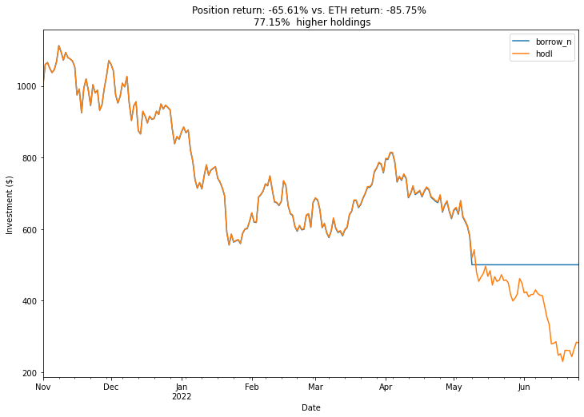
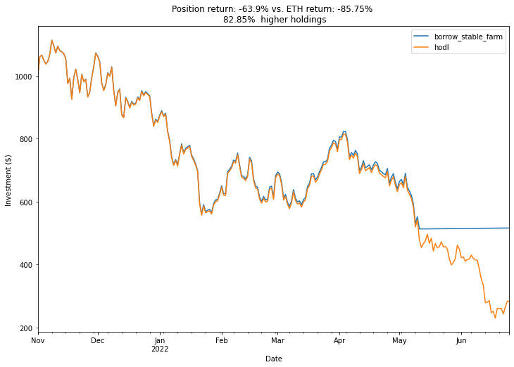
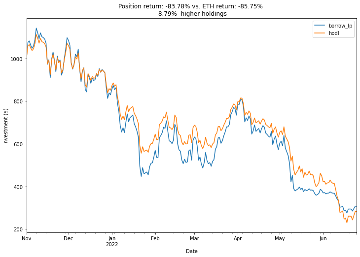

Liquidations. They're not so bad
Why borrowing against your crypto works even in a down market.
Given the current state of the market you may have had an over-collateralized loan liquidated recently. It can't just be me. I'm here to make you (and me) feel better about making your decision to borrow against your crypto assets.
Having your assets work for you is definitely how you get bigger returns going up, but can they help when things go down too? Yes, definitely. So long as you do the right things with your borrowed assets. I'll cover three scenarios assuming you deposited some ETH into Aave at the height of the market, I chose November 1st 2021. I also assumed you borrowed a stable coin like USDC that maintained it's peg (it's a lot easier to repay if it doesn't) at a 50% Loan to Value ratio at time of deposit. So let's see what just hodling ETH would have done compared to borrowing against your assets at the top of the market and experiencing a liquidation. Scenarios are run with a $1,000 ETH investment deposited in a lending protocol on November 1 with a 50% LTV with a 1% borrow APR.
First what if you did nothing, you borrowed some USDC against your ETH and didn't touch it while interest accumulates. How could that be better than just hodling ETH? Well, when ETH drops the way it does, and when you get liquidated, you keep your borrowed loan and lose your falling ETH. Here's a chart of that comparison to see how that works, when your collateral is taken, but so are your debt obligations. Returns for position and ETH are annualized.
You would have assets worth 77.15% more today if you just borrowed USDC against your ETH and it was liquidated
You can see right when you were liquidated on May 11th and your position becomes just some USDC that doesn't change in value. Your position would have lost value according to the interest you paid on the borrowed USDC but that amount is pretty small. Since most people using these platforms are long ETH, not enough people borrow (short) ETH to give it any meaningfull savings APR.
Essentially, this is a 0 alpha strategy with a stop loss. But if you are borrowing assets you should put those to work too. Now what if you kept your exposure to USDC but found a way to farm them for a modest 5%
Look at that blue line on top of the orange!
Now you've managed to have a positive 5% alpha with the same stop loss. This would allow you to buy even more ETH than you started with wherever you want to pick the bottom to be.
Ok let's say on November 1st you didn't magically know that the ETH price could possibly go down. So instead of keeping your loan in stable coins, you decided to swap half of it back to ETH and deposit it into a liquidity pool and earned 25% yield while people traded between the two assets. Remember that Impermanent Loss makes your position more ETH heavy as the price goes down. This would inherently be a levered ETH position, but still has a stable element and collects trade fees to capture yield (which typically go way up in times of volatility).
This bullish strategy during a bear market would still net you a slightly higer return than if you just held ETH
Conclusion? Borrow as much money as you can and get levered up to your armpits you beautiful mistake 🚀📈. Well maybe not, just don't feel embarrassed if you do get liquidated and know that you can still do smart things with borrowed money. Not everyone who borrows money is as dumb as 3AC. Hopefully this inspired some confidence to continue being a degen even in a bear market!